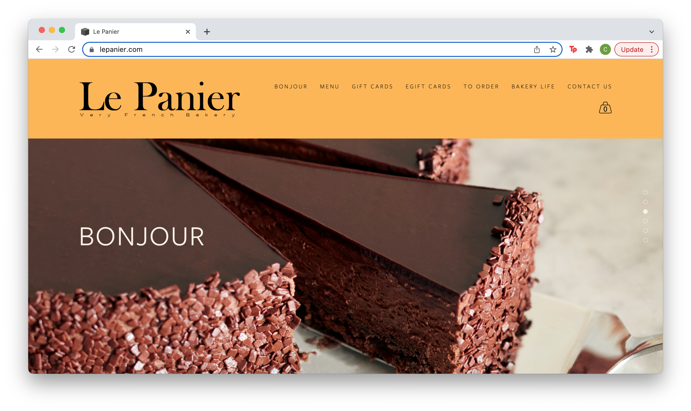
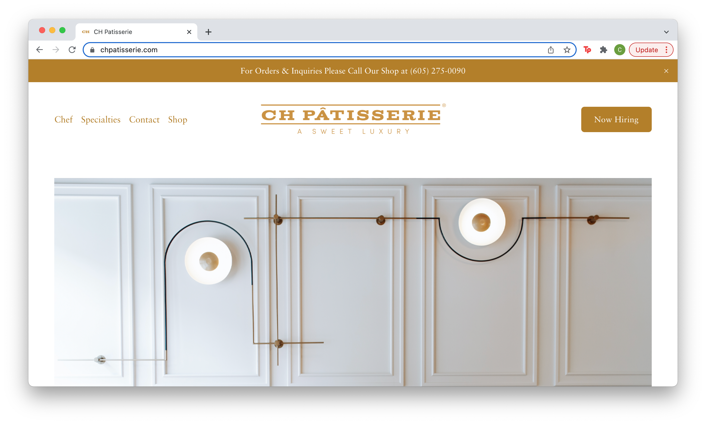
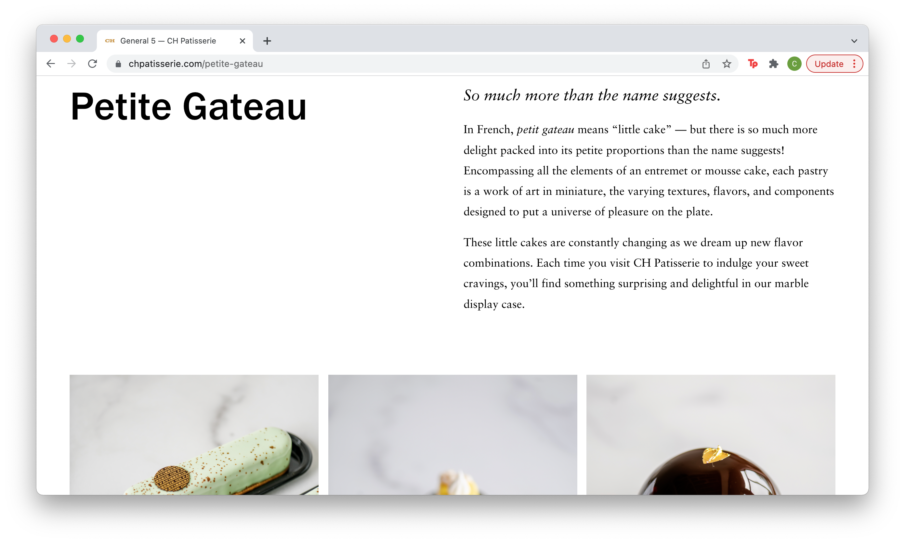
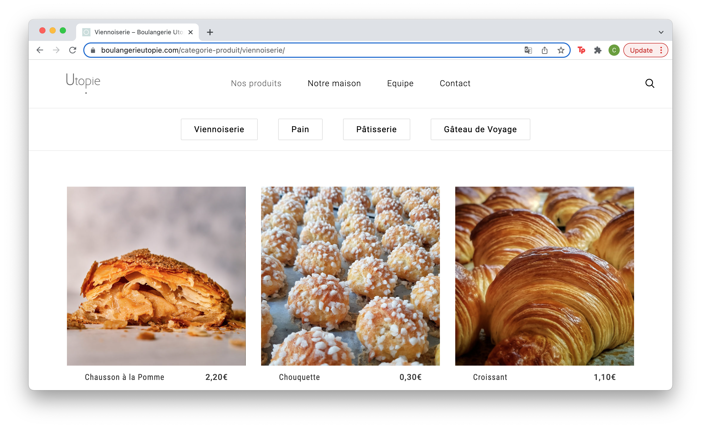
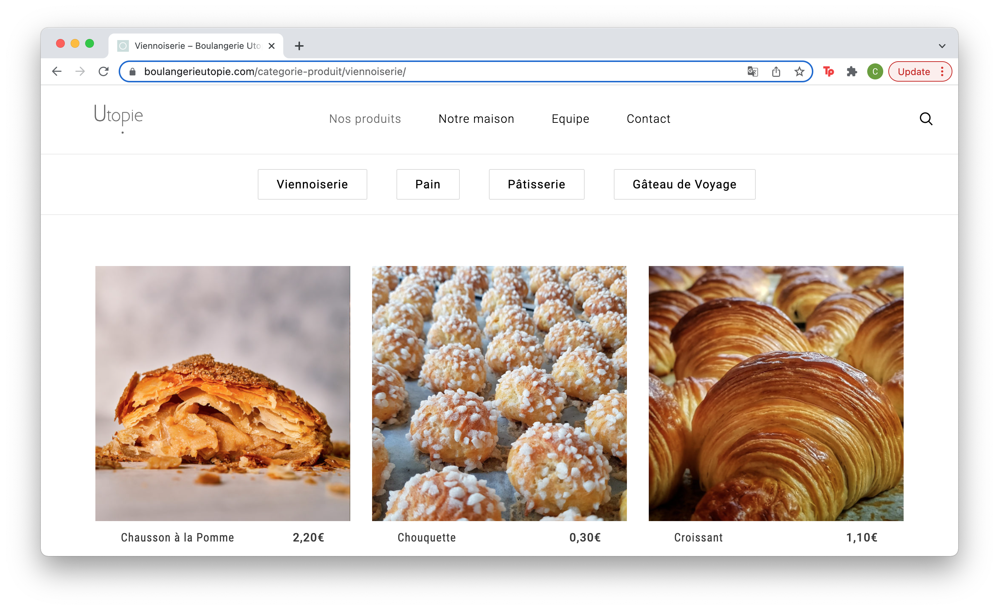

Final project proposal
Introduction
Boulangerie SLO
Our company brings fresh, authentic French pasteries to the central coast of California.
We offer a variety of goods baked fresh every day.
Target audience
Our target audience is those with a taste for fine baked goods. We also target companies who frequently send high-quality company gifts, whether as thank-yous or holiday gifts. Additionally, tourists may see our website and stop in for a treat. People visit this site to gain an udnerstanding of the aesthetic and tone of Boulangerie SLO, as well as the quality of our products from the provided visuals. Many may also visit the menu page to browse the items that are offered.
The goals of visitors of this website include obtaining contact information, viewing the menu and photos of the food, gaining an understanding of the quality Boulangerie SLO, and placing an order.
Comparative analysis
Le Panier

CH Patisserie
https://www.chpatisserie.com/petite-gateau
 Boulangerie Utopie
https://boulangerieutopie.com/
 

Website content
Home
Bonjour & Bienvenue.
[Image of various colorful pasteries shot against a white background]
About
Boulangerie SLO was founded in 2022. Our baked goods are prepared daily by the finest bakers. We strive to provide customers with the most authentic French pasteries.
Our team of bakers are highly trained in French baking techniques and craft only the best of pasteries. Our head baker, Guillame, was born in Lyon where he trained as a pastry chef.
[Streetview image of storefront during the daytime.]
Menu
-
Croissant
Our classic flaky, butter Croissant.
$4.00
-
Pain au Chocolat
Croissant with a rich chocolate interior.
$5.00
-
Macaron
Avalible in a variety of flavors:
- Vanilla
- Chocolate
- Pistachio
- Raspberry
- Coffee
$1.50 each. $15/dozen.
-
Baguette
A classic loaf.
$3.00
-
Palmier
Crispy puff pastry with sugar.
$3.00
-
Napoléon
Flaky pastry with vanilla crème layers.
$7.00
-
Éclair
Choux dough pastry with cream filling.
$6.00
-
Meringue
Classic baked meringue.
$2.00
-
Tarte au citron
Flaky crust with lemon filling.
$7.00
[Image of classic and chocolate croissant.]
Location
We are located in downtown San Luis Obispo on the corner of Higuera and Morro at 952 Higuera St.
Phone: (805)365-9021
[Image of interior of Boulangerie SLO]